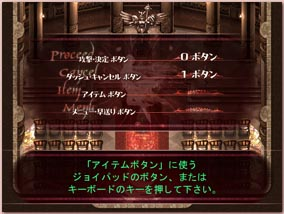
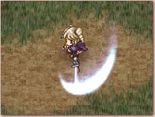
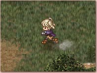
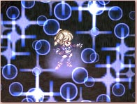
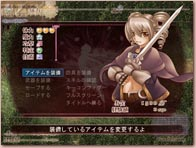
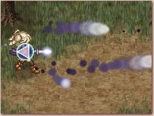
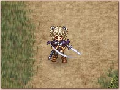
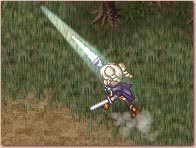

|
操作方法について
|

|
ゲームの操作には、キーボードの矢印キー （またはジョイパッドの十字ボタン） とそれ以外に４つのボタンを使用します。４つのボタンには、キーボードまたはジョイパッドから好きなボタンを割り振ることができます。
ゲームの初回起動時にボタン設定画面が開き、ゲームで使うボタンの割り振りを行うことができます。以後、ゲーム中いつでもボタンの割り振りを変更することが可能です。
アクションゲームですので、ジョイパッドでの操作を推奨します。
|
|
|  |
 |
| 攻撃・決定ボタン 剣を振って敵を攻撃します。 選択肢の決定や文字送りにも使用します。 |
ダッシュ・キャンセルボタン 押しながら移動することで走ることができます。 メニュー画面でのキャンセルにも使用します。 |
|
|  |
 |
| アイテムボタン 装備しているアイテムや魔法を使います。 装備はメニュー画面で行います。 |
メニューボタン メニュー画面を開きます。 また、イベント中に押すことでイベントを早送りできます。 |
その他のアクション
|  |
魔法剣
攻撃ボタンを押しっぱなしにすると、遠距離攻撃の魔法剣を撃つことができます。 魔力を消費し、魔力が無くなると撃つことができなくなります。 装備している武器によって魔法剣の効果は変わります。
|
|  |
剣振り払い
画面内の敵を全滅させた後、攻撃ボタンをすばやく２回押すと、剣の血のりを振り払うことができます。 このとき、画面内のお金アイテムを全て自動で回収することができます。
|
|  |
連続攻撃
剣振り払いができないとき、タイミングよく攻撃ボタンを押すことで連続攻撃ができます。 ただし、連続攻撃には対応したスキルを覚えていることが必要です。 |
戻る
|